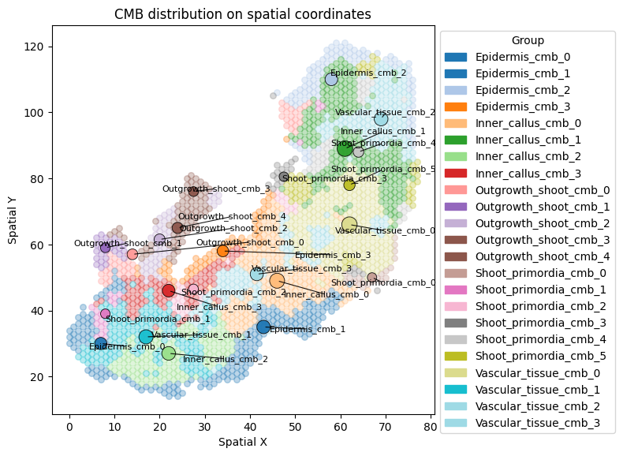
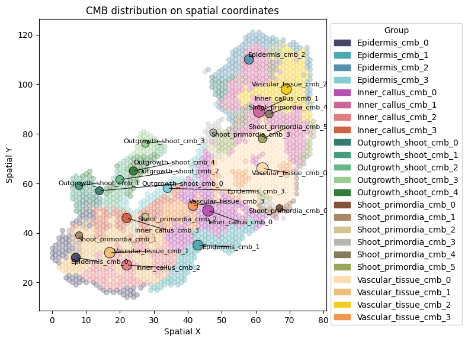
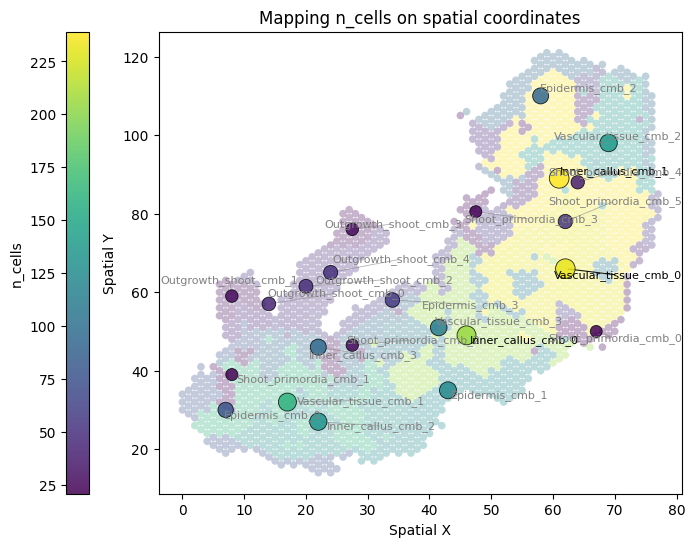
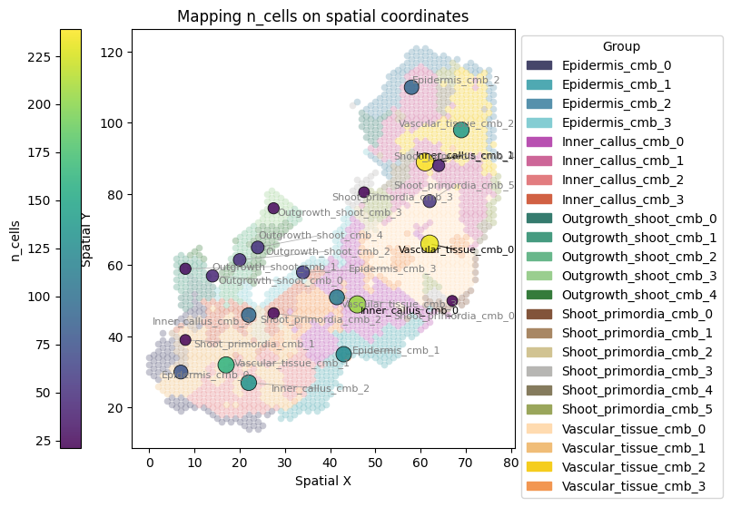

Visualize CellMetaBins on spatial coordinates
In this tutorial, we will use a real dataset from Song et al. (PNAS, 2023) to show the visualization of CellMetaBins (CMBs) on spatial coordinates. This processed dataset can be downloaded from Baidu Netdisk.
import sys
from pathlib import Path
import numpy as np
import pandas as pd
import scanpy as sc
import scipy.sparse as sp
from anndata import AnnData
import anndata as ad
from kneed import KneeLocator
import matplotlib.pyplot as plt
sys.path.insert(0, str(Path("/home/path/linemut/src/linemut_build/"))) # The path to LineMut Build scripts
from processData import combine_ratio_depth
from plotCMBs import plot_cmb_cent
from plotCMBs import plot_obs_with_cmb_cent
Three files are needed to visualize SNV:
adatas: Ratio and depth information of CMB * SNV in h5ad files
coor: Original cell coordinate file with 3 columns (cell, x, y) and no header
cmb_info: Cell CMB group annotation with 2 columns (cell, group) and no header
Load and combine data
ad_ratio = ad.read_h5ad("Dataset1/unit_ratio.h5ad")
ad_depth = ad.read_h5ad("Dataset1/unit_depth.h5ad")
adata = combine_ratio_depth(ad_ratio, ad_depth)
Load spot coordinates and respective CMB labels
coor1 = pd.read_csv('Dataset1/cells_coor.csv', header = None, names = ['cell', 'x', 'y'], index_col = 0)
cmb_info1 = pd.read_csv('Dataset1/cellmetabin.csv', header = None, names = ['cell', 'group'], index_col = 0)
coor1[['x','y']] = coor1[['x','y']].apply(pd.to_numeric, errors='coerce')
df1 = coor1.join(cmb_info1, how='inner')
cmb_agg1 = df1.groupby('group').agg(x_center=('x','median'), y_center=('y','median'), n_cells=('x','size')).reset_index()
Add aggregated coordinate informtaion to adata
adata.obs = adata.obs.join(cmb_agg1.set_index('group')[['x_center','y_center','n_cells']], how='left')
Perform visualization
Cell colors can be adjusted with parameter “group_colors” in four ways:
(1) Pass a dictionary (specify colors by group name): e.g. group_colors = {‘A’: ‘red’, ‘B’: ‘green’}
(2) Pass a sequence of colors (assigned in order of appearance, looping if not already present): e.g. group_colors = [‘red’, ‘green’, ‘orange’]
(3) Pass a Matplotlib colormap name: e.g. group_colors = ‘viridis’
(4) If not passed, ‘tab20’ is used by default
Plot distribution of the CMBs on spatial coordinates
plot_cmb_cent(adata, coor1, cmb_info1)
Looks like you are using a tranform that doesn't support FancyArrowPatch, using ax.annotate instead. The arrows might strike through texts. Increasing shrinkA in arrowprops might help.

(<Figure size 800x600 with 1 Axes>,
<Axes: title={'center': 'CMB distribution on spatial coordinates'}, xlabel='Spatial X', ylabel='Spatial Y'>)
# Use manually selected colors for CMBs
group_colors_cmb1 = {"Inner_callus_cmb_0":"#B850B1", "Inner_callus_cmb_1":"#CD6698", "Inner_callus_cmb_2":"#E27C80", "Inner_callus_cmb_3":"#D16144",
"Outgrowth_shoot_cmb_0":"#357B6E", "Outgrowth_shoot_cmb_1":"#469B80", "Outgrowth_shoot_cmb_2":"#68B78B", "Outgrowth_shoot_cmb_3":"#9ACE8F", "Outgrowth_shoot_cmb_4":"#357B3B",
"Vascular_tissue_cmb_0":"#FFDBB0", "Vascular_tissue_cmb_1":"#f0bd78", "Vascular_tissue_cmb_2":"#F5CD1E", "Vascular_tissue_cmb_3":"#F29651",
"Epidermis_cmb_0":"#46466A", "Epidermis_cmb_1":"#4FA9B2", "Epidermis_cmb_2":"#5691AC", "Epidermis_cmb_3":"#84CDD3",
"Shoot_primordia_cmb_0":"#82543A", "Shoot_primordia_cmb_1":"#A88764", "Shoot_primordia_cmb_2":"#d1c392", "Shoot_primordia_cmb_3":"#B7B6B3", "Shoot_primordia_cmb_4":"#857b5d", "Shoot_primordia_cmb_5":"#9aa65b"}
plot_cmb_cent(adata, coor1, cmb_info1, group_colors = group_colors_cmb1)

(<Figure size 800x600 with 1 Axes>,
<Axes: title={'center': 'CMB distribution on spatial coordinates'}, xlabel='Spatial X', ylabel='Spatial Y'>)
Plot colors of the CMBs on obs columns of the adata
adata.obs.head(3)
| x_center | y_center | n_cells | |
|---|---|---|---|
| Outgrowth_shoot_cmb_4 | 24.0 | 65.0 | 51 |
| Vascular_tissue_cmb_0 | 62.0 | 66.0 | 232 |
| Shoot_primordia_cmb_2 | 27.5 | 46.5 | 26 |
plot_obs_with_cmb_cent(adata, coor1, cmb_info1, cell_colors_by_obs=True, group_by = "n_cells", group_colors=group_colors_cmb1)
plot_obs_with_cmb_cent(adata, coor1, cmb_info1, cell_colors_by_obs=False, group_by = "n_cells", group_colors=group_colors_cmb1)


(<Figure size 900x600 with 2 Axes>,
<Axes: title={'center': 'Mapping n_cells on spatial coordinates'}, xlabel='Spatial X', ylabel='Spatial Y'>)